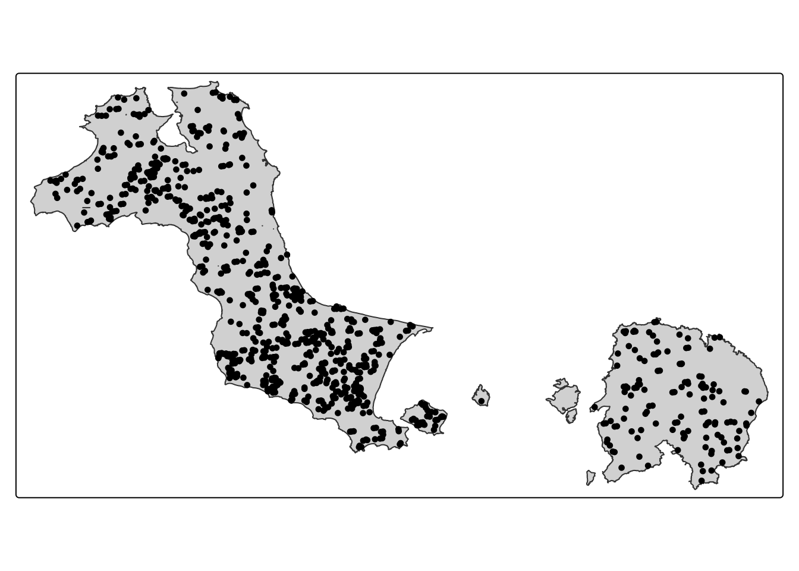
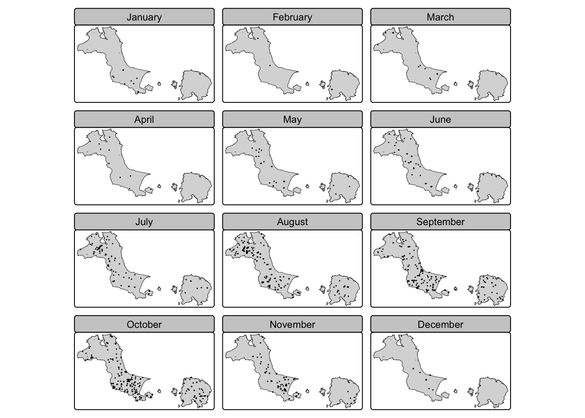
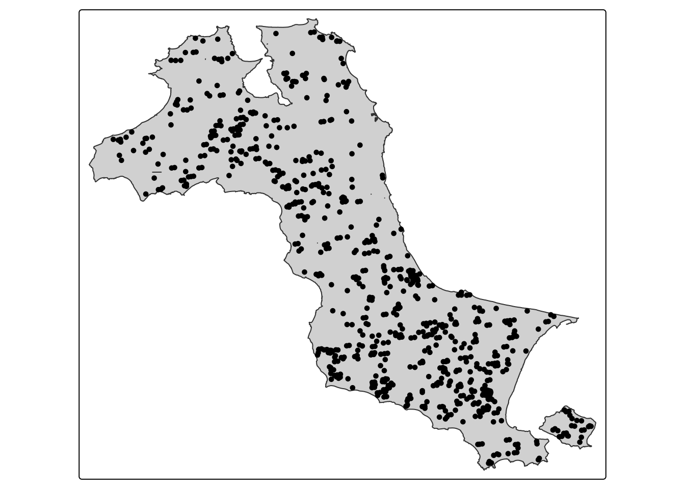
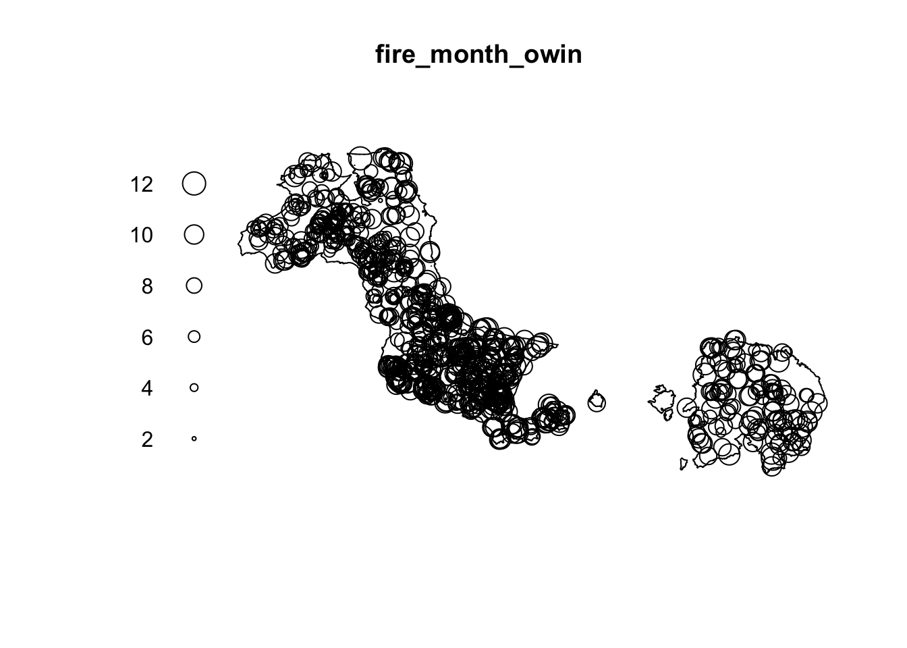
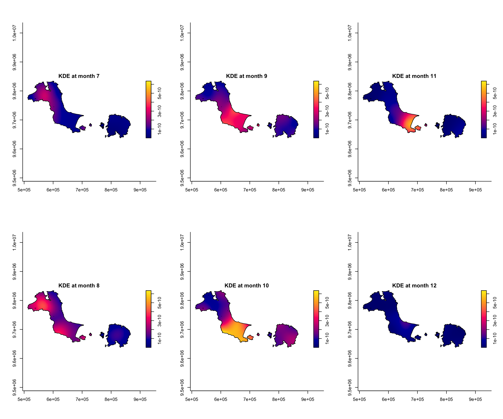
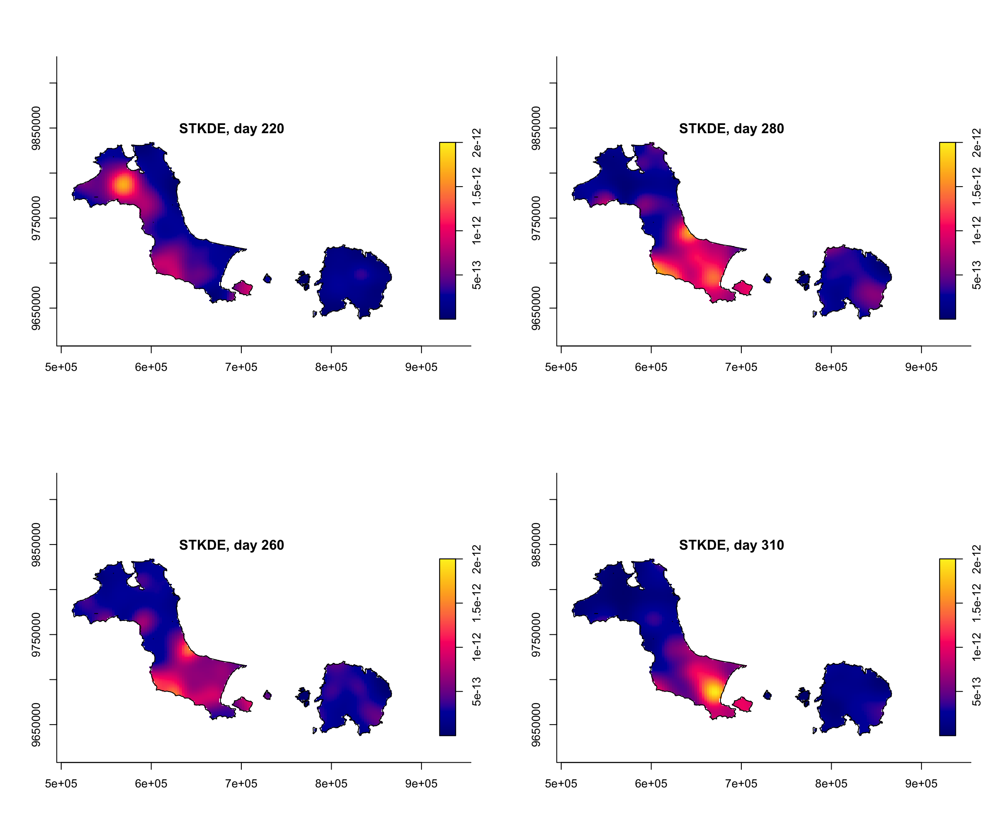
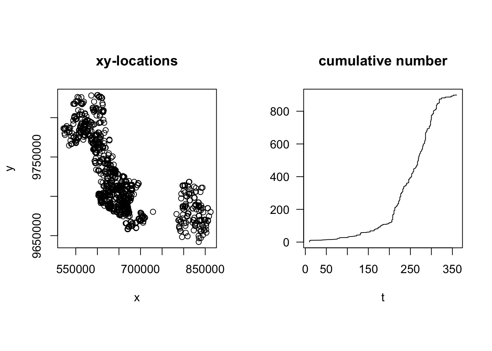
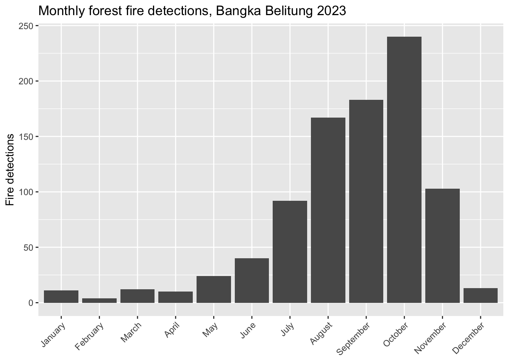
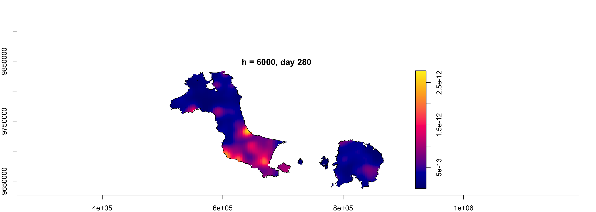
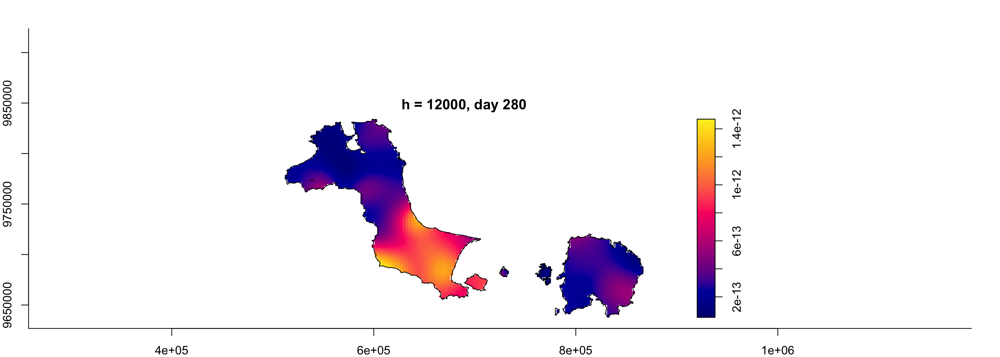

pacman::p_load(sf, raster, spatstat, sparr,
tmap, stpp, tidyverse)Nor Hendra
Geospatial Analytics & Applications
Hands-on Exercise 3: Spatio-Temporal Point Patterns Analysis
1. Overview and Research Questions
A spatio-temporal point process treats every event as carrying two things at once, a location and a moment, and forest fires fit that idea almost too neatly. A fire has coordinates and it has a date. The whole question is whether those two are linked. The reference chapter works this through with MODIS forest fire detections over Kepulauan Bangka Belitung across 2023.
The two questions I want to keep in view the whole way through:
- Are the forest fire locations in Kepulauan Bangka Belitung independent in space, and in space and time together?
- If they are not, then when and where do they pile up?
I downloaded one 1.16 GB Indonesia-wide sub-district shapefile, and one MODIS fire CSV for the entire country. So before any modelling happens, my real starting job is cutting the province out of both files myself.
2. The Data
Two data sets. Both arrived national in my copy, so the province still has to be extracted from each.
- modis_2023_Indonesia.csv, MODIS active-fire detections for all of Indonesia in 2023, from the Fire Information for Resource Management System. Columns I care about:
latitude,longitude,acq_date, and a few extras likeconfidence,frp,satellite, anddaynight. - Batas_Wilayah_KelurahanDesa_10K_AR.shp, the sub-district (kelurahan or desa) boundaries for the whole of Indonesia at 1:10,000, from the Indonesia Geospatial portal. This is the file I filter down to make
Kepulauan_Bangka_Belitung.
3. Installing and Loading the R Packages
Note
On macOS, sparr itself has tcltk as an internal dependency, which means XQuartz is required regardless. Install it once from www.xquartz.org and the issue goes away.
4. Extracting the Study Area from the National Boundary File
I have to build Kepulauan_Bangka_Belitung out of the national file first, and that national file is 1.16 GB with 83,518 polygons, which is far too heavy to keep re-reading on every knit. So this section is a one-time extraction. I run it once, write out a small provincial file, and everything after this reads that.
4.1 Reading the national file
kelurahan <- st_read(dsn = "data/geospatial",
layer = "Batas_Wilayah_KelurahanDesa_10K_AR")That gave me 83,518 features for the whole country, geometry type MULTIPOLYGON, sitting in WGS84. The .prj says GCS_WGS_1984, so EPSG:4326. I am glad I checked the CRS early, because the fire coordinates are also plain lon/lat degrees. Both files start life in the same reference system, so nothing is misaligned before I project.
4.2 Finding the right field before I filter anything
I really did not want to filter on a province name and get it slightly wrong. The attribute table is a thicket of code fields (KDPBPS, WADMKC, WADMKD, and so on). The province name turns out to live in WADMPR. Rather than take that on faith, I pulled the exact spelling straight from the data.
sort(unique(kelurahan$WADMPR))
grep("Bangka", kelurahan$WADMPR, value = TRUE, ignore.case = TRUE) |> unique()The grep gives back exactly one value, "Kepulauan Bangka Belitung", with no trailing spaces and no second spelling hiding in the list. Good. That is the string to filter on, and now I know it is the only one.
4.3 Filtering to the province
babel <- kelurahan[kelurahan$WADMPR == "Kepulauan Bangka Belitung", ]
nrow(babel)nrow(babel) comes back as 394. A sensible next check is whether any sub-district got recorded twice, since duplicate rows would inflate that count.
sum(duplicated(babel$OBJECTID))Every OBJECTID is unique, so nothing is duplicated.
4.4 Dropping the Z dimension
My first attempt to write babel out failed. GDAL threw an error about a 3D Multi Polygon not supported by the Shapefile format. The national file mixes 2D and 3D geometries, so some polygons are carrying a Z (elevation) coordinate, and the Shapefile writer will not take that mixture. I chose to flatten the geometry to two dimensions for simplicity.
babel <- st_zm(babel, drop = TRUE, what = "ZM")
NoteIs it safe to throw the Z away?
This was the bit I stopped and double-checked, because dropping data always makes me nervous.
However, I noticed from the reference hands-on that it also drops Z itself. Its own import pipe for the boundary runs st_read(...) %>% st_union() %>% st_zm(drop = TRUE, what = "ZM") %>% st_transform(crs = 32748), so st_zm is right there in the official workflow. Second, nothing downstream can even use a Z value. The observation window comes from as.owin(), and spatstat’s owin and ppp objects are strictly planar. When the stpp object gets built later, the reference pulls only coords[,1] and coords[,2], the x and y. A third coordinate is never read anywhere in the whole exercise.
So keeping Z would not add anything, and it would actively break as.owin(). Elevation plays no part in a 2D fire-location pattern.
4.5 Writing the extract
st_write(babel,
dsn = "data/geospatial",
layer = "Kepulauan_Bangka_Belitung",
driver = "ESRI Shapefile",
delete_layer = TRUE)Two quick sanity checks before I trust it. The geometry type now prints as plain POLYGON rather than POLYGON Z, so the Z-drop really did take. And the bounding box lands at about X[105.11, 108.87], Y[-3.80, -1.49]. That box sits off the east coast of Sumatra, which is exactly where Bangka and Belitung are. The filter grabbed the right slice of the country and not some same-named district elsewhere. This Kepulauan_Bangka_Belitung file is what the rest of the exercise uses.
TipA projection detail I caught on the way
The reference projects to EPSG:32748, UTM zone 48S. Zone 48 runs from 102°E to 108°E, and my bounding box reaches east to 108.87°E. So the tip of Belitung pokes just past the zone boundary into what is technically zone 49. For a whole-province analysis, sticking to a single zone is the normal choice and I am keeping 32748, but it is a nice reminder that a UTM zone is a real edge, not a suggestion.
5. Importing and Preparing the Study Area
From here on I load the 8.9 MB file I just wrote, never the giant national one again.
kbb <- st_read(dsn = "data/geospatial",
layer = "Kepulauan_Bangka_Belitung")Reading layer `Kepulauan_Bangka_Belitung' from data source
`/Users/norhendra/norhendra/ISSS626-GAA/Hands-on_Ex/Hands-on_Ex03/data/geospatial'
using driver `ESRI Shapefile'
Simple feature collection with 394 features and 26 fields (with 1 geometry empty)
Geometry type: MULTIPOLYGON
Dimension: XY
Bounding box: xmin: 105.1085 ymin: -3.80161 xmax: 108.8718 ymax: -1.493399
Geodetic CRS: WGS 84nrow(kbb)[1] 394The file reads back as 394 features. But Kepulauan Bangka Belitung only has 393 named sub-districts in the attribute table. So one feature has no name to go with it, and my earlier duplicate check did not catch this. Before I build the observation window I always want to know there are no empty geometries in the mix, because an empty polygon quietly poisons as.owin() and st_union(). So I checked.
sum(st_is_empty(kbb))[1] 1That returns 1. The count splits into 393 real sub-district polygons plus one attribute record with nothing to draw. duplicated(OBJECTID) could never have caught this, because the empty row is not a copy of anything. It has its own OBJECTID. It is a hole, not a twin, and those are two completely different problems. I am glad I ran the empties check instead of trusting the 394.
I drop the empty feature on purpose, so it does not just vanish on me inside the next step.
kbb_clean <- kbb %>% filter(!st_is_empty(.))
nrow(kbb_clean)[1] 393393, matching the number of named sub-districts. Now the boundary pipe, the same shape the reference uses, with the cleaned object going in.
This is where things got messy. My first attempt at the union was just the reference’s pipe:
kbb_sf <- kbb_clean %>%
st_union() %>%
st_zm(drop = TRUE, what = "ZM") %>%
st_transform(crs = 32748)It ran fine, no error. But then I plotted it against the fire points and the map looked wrong. There were extra blobs floating around, a scatter of tiny specks off the coast, and even a little white hole punched into Bangka island. That is not what a clean provincial boundary should look like. So I stopped and counted the pieces, and the union had produced 536 separate polygons. For a two-island province that is clearly way too many.
I spent my whole evening (Prof, mercy on the Take-Homes please) figuring out why. It comes down to the scale of the source. This is a 1:10,000 file, so the sub-district edges are drawn in extreme detail, and neighbouring polygons do not always share a perfectly identical border. When st_union() dissolves them, those hairline mismatches do not close cleanly. Instead they survive as sliver polygons, and that is what was cluttering the map.
To see what I was dealing with, I split the dissolved result back into individual polygons and sorted them by area.
kbb_pieces <- kbb_clean %>%
st_make_valid() %>%
st_union() %>%
st_zm(drop = TRUE, what = "ZM") %>%
st_transform(crs = 32748) %>%
st_cast("POLYGON")
sort(as.numeric(st_area(kbb_pieces)) / 1e6, decreasing = TRUE)[1:10]The sizes told the whole story. The two big ones are Bangka at about 11,500 km² and Belitung at about 4,600 km². After those come a handful of genuine secondary islands (212, 119, 48 km² and so on), and then a long tail of pieces under 5 km² that keep shrinking down to fractions of a square kilometre. Those tiny ones are the visual clutter.
NoteChoosing where to cut
I went back and forth on the threshold. Filtering in raw degrees felt arbitrary, so I projected to metres first and filtered on area in km², which is something I can actually reason about. A 1 km² cut still left 41 islands, which is technically correct but keeps every little offshore rock and makes the map look busy. Bumping it to 10 km² keeps the real landmasses (Bangka, Belitung, and their substantial neighbours) and drops the scatter of specks. That gives me a clean map that reads like the reference’s two islands without me deleting anything that actually matters. I am going with 10 km².
kbb_sf <- kbb_clean %>%
st_make_valid() %>%
st_union() %>%
st_zm(drop = TRUE, what = "ZM") %>%
st_transform(crs = 32748) %>%
st_cast("POLYGON") %>%
st_as_sf() %>%
filter(as.numeric(st_area(.)) / 1e6 > 10) %>%
st_union()Walking through what each line does: st_make_valid() repairs any self-intersections before the dissolve so the union has clean input to work with. st_cast("POLYGON") breaks the dissolved MultiPolygon into separate pieces so I can measure each one. st_as_sf() is needed here because st_cast() on an sfc returns another sfc, not a data frame, and dplyr::filter() needs a proper sf object to work on. The filter() keeps only pieces larger than 10 km², which throws out the slivers and specks. Then a final st_union() glues the survivors back into one geometry for the window.
Then as.owin() turns the outline into the owin object.
kbb_owin <- as.owin(kbb_sf)
kbb_owinwindow: polygonal boundary
enclosing rectangle: [512066.8, 866910.2] x [9637790, 9834006] unitsclass(kbb_owin)[1] "owin"An owin, which is what I need feeding the density functions.
6. Extracting Forest Fires within Bangka Belitung
The modis CSV has no province column at all. The only thing tying a given fire to Bangka Belitung is whether its coordinates fall inside the boundary.
6.1 Reading the national CSV as points
fire_national <- read_csv("data/aspatial/modis_2023_Indonesia.csv")
nrow(fire_national)[1] 52156fire_sf_all <- fire_national %>%
st_as_sf(coords = c("longitude", "latitude"),
crs = 4326)I am holding this in EPSG:4326 for a moment. My boundary is now in 32748, so the two are not in the same CRS yet, and I would rather bring them together deliberately than assume they line up.
6.2 The lazy crop, and why I did not use it
The tempting shortcut is to keep any fire whose lon and lat land inside the province’s bounding rectangle. It is fast. It is also wrong, and I wanted to see how wrong before doing it properly.
kbb_bbox <- st_transform(kbb_sf, 4326) %>% st_bbox()
kbb_bbox xmin ymin xmax ymax
105.108509 -3.272526 108.299552 -1.501603 fire_bbox <- fire_sf_all %>%
filter(
st_coordinates(.)[,1] >= kbb_bbox["xmin"],
st_coordinates(.)[,1] <= kbb_bbox["xmax"],
st_coordinates(.)[,2] >= kbb_bbox["ymin"],
st_coordinates(.)[,2] <= kbb_bbox["ymax"])
nrow(fire_bbox)[1] 1717The rectangle keeps 3,496 fires. Trouble is, that rectangle drawn around the two islands also scoops up a wide stretch of the Java Sea and slices off bits of neighbouring provinces on the Sumatra mainland. Most of those 3,496 are nowhere near Bangka Belitung land. They just happen to sit inside its bounding box.
6.3 The real spatial filter
For the proper filter I put both layers in the projected CRS and keep only the points that actually fall inside the dissolved boundary. st_filter with the default st_intersects predicate runs the point-in-polygon test.
fire_sf <- fire_sf_all %>%
st_transform(crs = 32748) %>%
st_filter(kbb_sf, .predicate = st_intersects)
nrow(fire_sf)[1] 899899 fires. So the honest number is 899 out of 52,156 national detections, and the bounding-box shortcut would have handed me nearly four times too many. The jump from 3,496 down to 899 is the entire argument for point-in-polygon over a rectangle. I am filing that away for any future exercise where a bounding box looks good enough.
6.4 Building the temporal marks
The chapter derives three time fields from acq_date. A ppp mark has to be numeric or character or factor, so day-of-year and month-number are the usable marks for the density functions. The labelled month factor is for the facet maps.
fire_sf <- fire_sf %>%
mutate(DayofYear = yday(acq_date),
Month_num = month(acq_date),
Month_fac = month(acq_date, label = TRUE, abbr = FALSE))A quick look at the monthly spread, because it sets up everything after this.
fire_sf %>%
st_drop_geometry() %>%
count(Month_num)# A tibble: 12 × 2
Month_num n
<dbl> <int>
1 1 11
2 2 4
3 3 12
4 4 10
5 5 24
6 6 40
7 7 92
8 8 167
9 9 183
10 10 240
11 11 103
12 12 13The counts climb hard into the dry season. Single digits and low tens from January through May, then 92 in July, 167 in August, 183 in September, and a peak of 240 in October before dropping back to 13 in December. That shape is the whole reason a spatio-temporal analysis earns its keep here. The fires are nowhere near evenly spread across the year, so the time mark is doing real work, not just riding along.
7. Visualising the Fire Points
7.1 Overall distribution
tm_shape(kbb_sf) +
tm_polygons() +
tm_shape(fire_sf) +
tm_dots()
NoteMy map has two islands, the reference has one
This tripped me up for a while, so it is worth writing down. My map shows two islands, Bangka on the left and Belitung on the right. The reference chapter’s map shows only Bangka. At first I assumed I had made a mistake and was pulling in some neighbouring province. I went back and checked the reference’s own st_read output, and the boundary it loaded has 297 features with an eastern edge at longitude 106.85. That is exactly where Bangka ends. Belitung starts near 107.5 and is not in the reference’s file at all.
So the reference used a Bangka-only boundary, even though the province is literally named for both islands (Bangka and Belitung). My extraction from the national file keeps both, which is the geographically correct study area. I am keeping both islands as my main analysis, and I reproduce the reference’s Bangka-only view further down in Section 7.3 so I can compare the two directly.
Even with no statistics yet, the points clearly are not spread evenly. A few dense knots stand out against emptier ground, which is precisely the thing the K-function has to either back up or knock down later.
7.2 By month
Faceting on the labelled month factor shows the seasonal build-up as a map instead of a table.
tm_shape(kbb_sf) +
tm_polygons() +
tm_shape(fire_sf) +
tm_dots(size = 0.1) +
tm_facets(by = "Month_fac",
free.coords = FALSE,
drop.units = TRUE)
The early-year panels are nearly bare. The August, September, and October panels fill right in. The count table already told me that, but seeing the panels drives home that the dry-season fires are not only more numerous, they land in particular parts of the province.
7.3 Reproducing the reference’s Bangka-only view
Now that I know the reference used only Bangka, I wanted to build that boundary myself and see how much it actually changes. It is a quick filter: keep only the polygons west of the gap between the islands. Bangka sits below about 107 degrees longitude, Belitung above it, so I split there.
bangka_only <- kbb_clean %>%
st_make_valid() %>%
st_zm(drop = TRUE, what = "ZM") %>%
st_transform(crs = 32748) %>%
st_union() %>%
st_cast("POLYGON") %>%
st_as_sf() %>%
filter(as.numeric(st_area(.)) / 1e6 > 10)
# keep pieces whose centroid longitude is west of the inter-island gap
bangka_only <- bangka_only %>%
filter(st_coordinates(st_transform(st_centroid(.), 4326))[,1] < 107) %>%
st_union()fire_bangka <- fire_sf %>% st_filter(bangka_only, .predicate = st_intersects)
nrow(fire_bangka)[1] 766That leaves 766 fires on Bangka alone, versus 899 across the full province. So Belitung contributes 133 fires, which is not nothing. Plotting the Bangka-only window shows the single-island shape the reference works with.
tm_shape(bangka_only) +
tm_polygons() +
tm_shape(fire_bangka) +
tm_dots()
8. Computing STKDE by Month
Spatio-temporal KDE comes from spattemp.density() in sparr. It wants a ppp whose marks are the time index and whose window is the study area. So the prep is: keep only the month mark, convert to ppp, then clip to the owin.
8.1 Keeping only the month mark
as.ppp() keeps the mark field and the geometry and nothing else, so I trim first.
fire_month <- fire_sf %>%
select(Month_num)8.2 Creating the ppp
fire_month_ppp <- as.ppp(fire_month)
fire_month_pppMarked planar point pattern: 899 points
marks are numeric, of storage type 'double'
window: rectangle = [521564.1, 862416.4] x [9642001, 9828767] unitssummary(fire_month_ppp)Marked planar point pattern: 899 points
Average intensity 1.412198e-08 points per square unit
Coordinates are given to 10 decimal places
marks are numeric, of type 'double'
Summary:
Min. 1st Qu. Median Mean 3rd Qu. Max.
1.000 8.000 9.000 8.644 10.000 12.000
Window: rectangle = [521564.1, 862416.4] x [9642001, 9828767] units
(340900 x 186800 units)
Window area = 63659700000 square unitsA duplicate-points check, since coincident points can distort a density surface.
any(duplicated(fire_month_ppp))[1] FALSE8.3 Clipping to the window
Reading the reference here threw me for a second. It says to combine origin_am_ppp and am_owin, and a later line asks to plot ff_owin. None of those three objects exist anywhere in this chapter. However, the code underneath uses the correct objects, so I am following the code and ignoring the those names that did not exist.
fire_month_owin <- fire_month_ppp[kbb_owin]
summary(fire_month_owin)Marked planar point pattern: 899 points
Average intensity 5.420679e-08 points per square unit
Coordinates are given to 10 decimal places
marks are numeric, of type 'double'
Summary:
Min. 1st Qu. Median Mean 3rd Qu. Max.
1.000 8.000 9.000 8.644 10.000 12.000
Window: polygonal boundary
15 separate polygons (7 holes)
vertices area relative.area
polygon 1 47394 1.15336e+10 6.95e-01
polygon 2 (hole) 3 -3.92817e-01 -2.37e-11
polygon 3 (hole) 3 -1.87872e-01 -1.13e-11
polygon 4 (hole) 3 -1.88553e+01 -1.14e-09
polygon 5 (hole) 3 -6.78103e-02 -4.09e-12
polygon 6 (hole) 3 -3.44286e-02 -2.08e-12
polygon 7 (hole) 3 -1.96684e-03 -1.19e-13
polygon 8 30749 4.61643e+09 2.78e-01
polygon 9 (hole) 3 -3.65048e-02 -2.20e-12
polygon 10 1032 1.67625e+07 1.01e-03
polygon 11 3490 4.80502e+07 2.90e-03
polygon 12 2677 1.19161e+08 7.19e-03
polygon 13 3013 2.11761e+08 1.28e-02
polygon 14 1458 2.22187e+07 1.34e-03
polygon 15 1030 1.66243e+07 1.00e-03
enclosing rectangle: [512066.8, 866910.2] x [9637790, 9834006] units
(354800 x 196200 units)
Window area = 16584600000 square units
Fraction of frame area: 0.238plot(fire_month_owin)
8.4 The density estimate
st_kde <- spattemp.density(fire_month_owin)
summary(st_kde)Spatiotemporal Kernel Density Estimate
Bandwidths
h = 19155.99 (spatial)
lambda = 0.0264 (temporal)
No. of observations
899
Spatial bound
Type: polygonal
2D enclosure: [512066.8, 866910.2] x [9637790, 9834006]
Temporal bound
[1, 12]
Evaluation
128 x 128 x 12 trivariate lattice
Density range: [7.680122e-33, 6.358586e-10]8.5 Plotting the dry-season months
The reference plots July through December, which is exactly the window my monthly counts flagged as busy.
tims <- c(7, 8, 9, 10, 11, 12)
par(mfcol = c(2, 3))
for(i in tims){
plot(st_kde, i,
override.par = FALSE,
fix.range = TRUE,
main = paste("KDE at month", i))
}
Setting fix.range = TRUE pins the colour scale across all six panels, so they read on the same terms. A bright patch in October actually means more density than the same colour in July, because both panels share one scale rather than each stretching to its own maximum.
9. Computing STKDE by Day of Year
Month is a blunt mark. Day-of-year gives 134 distinct time slices across my 899 fires, a much finer temporal grain on the same spatial points.
9.1 ppp with the day mark
fire_yday_ppp <- fire_sf %>%
select(DayofYear) %>%
as.ppp()fire_yday_owin <- fire_yday_ppp[kbb_owin]
summary(fire_yday_owin)Marked planar point pattern: 899 points
Average intensity 5.420679e-08 points per square unit
Coordinates are given to 10 decimal places
marks are numeric, of type 'double'
Summary:
Min. 1st Qu. Median Mean 3rd Qu. Max.
10.0 219.0 260.0 247.7 288.0 360.0
Window: polygonal boundary
15 separate polygons (7 holes)
vertices area relative.area
polygon 1 47394 1.15336e+10 6.95e-01
polygon 2 (hole) 3 -3.92817e-01 -2.37e-11
polygon 3 (hole) 3 -1.87872e-01 -1.13e-11
polygon 4 (hole) 3 -1.88553e+01 -1.14e-09
polygon 5 (hole) 3 -6.78103e-02 -4.09e-12
polygon 6 (hole) 3 -3.44286e-02 -2.08e-12
polygon 7 (hole) 3 -1.96684e-03 -1.19e-13
polygon 8 30749 4.61643e+09 2.78e-01
polygon 9 (hole) 3 -3.65048e-02 -2.20e-12
polygon 10 1032 1.67625e+07 1.01e-03
polygon 11 3490 4.80502e+07 2.90e-03
polygon 12 2677 1.19161e+08 7.19e-03
polygon 13 3013 2.11761e+08 1.28e-02
polygon 14 1458 2.22187e+07 1.34e-03
polygon 15 1030 1.66243e+07 1.00e-03
enclosing rectangle: [512066.8, 866910.2] x [9637790, 9834006] units
(354800 x 196200 units)
Window area = 16584600000 square units
Fraction of frame area: 0.2389.2 Density with default bandwidths
kde_yday <- spattemp.density(fire_yday_owin)
summary(kde_yday)plot(kde_yday)Both chunks are eval: false. The density call with no bandwidth arguments runs its own internal selection and is slow, and its plot has the same every-single-day problem I deal with properly in Section 10.2. The default-bandwidth version is really only useful as a before-and-after against the tuned one, so rather than sit through it twice I skip straight to the bootstrap-tuned version in Section 10.
10. STKDE by Day of Year: Bootstrap Bandwidth
BOOT.spattemp() chooses the spatial bandwidth h and the temporal bandwidth lambda together, by bootstrap-estimating the mean integrated squared error, instead of me just accepting a default.
set.seed(1234)
BOOT.spattemp(fire_yday_owin)10.1 Density with the selected bandwidths
kde_yday <- spattemp.density(fire_yday_owin,
h = 9000,
lambda = 19)
summary(kde_yday)Spatiotemporal Kernel Density Estimate
Bandwidths
h = 9000 (spatial)
lambda = 19 (temporal)
No. of observations
899
Spatial bound
Type: polygonal
2D enclosure: [512066.8, 866910.2] x [9637790, 9834006]
Temporal bound
[10, 360]
Evaluation
128 x 128 x 351 trivariate lattice
Density range: [9.881054e-25, 2.000168e-12]10.2 Plotting
Here is the trap I walked straight into the first time. Calling plot(kde_yday) with nothing else renders one panel for every day in the temporal range. On my data that is well over a hundred images in a single chunk.
So instead of plotting every day, I pick a few dates that actually matter and pass them with tselect. I am choosing days that span the fire season: day 220 (early August, as things ramp up), day 260 (mid September), day 280 (early October, the peak from my monthly counts), and day 310 (early November, on the way down).
days <- c(220, 260, 280, 310)
par(mfcol = c(2, 2))
for(d in days){
plot(kde_yday, tselect = d,
override.par = FALSE,
fix.range = TRUE,
main = paste("STKDE, day", d))
}
Four panels on a shared colour scale tell me what I need: whether the hot zone moves around the province as the season progresses, or whether the same areas stay lit the whole way through. That is the actual question, and it does not need 343 near-identical frames to answer.
11. Spatio-temporal Point Patterns Analysis: stpp Methods
The density work says where and when fires are dense. The space-time K-function asks a sharper question. Are the fires clustered in space and time jointly, beyond whatever their separate spatial and temporal patterns would produce on their own? That joint part is what I actually care about.
11.1 Building the stpp object
Three steps. Pull the coordinates, bind them to the integer day, cast to the stpp 3D-point class. The time column has to be integer, and DayofYear already is one, so no coercion needed.
coords <- st_coordinates(fire_sf)fire_df <- data.frame(
x = coords[, 1],
y = coords[, 2],
t = fire_sf$DayofYear)fire_stpp <- as.3dpoints(fire_df)class(fire_stpp)[1] "stpp"plot(fire_stpp)
11.2 The space-time K-function
kbb_stik <- STIKhat(fire_stpp)plotK(kbb_stik)11.3 Reading the plot
The output is a contour surface over spatial distance u and temporal distance v. High values in the small-u, small-v corner mean fires cluster at both short distances and short time gaps at once, so events near each other in space also tend to be near each other in time.
12. Extras
Four things I wanted to poke at that the chapter leaves alone.
12.1 Do the STKDE hot months match the raw counts?
The month KDE panels lit up across August, September, and October. But that is a smoothed surface, and I wanted to be sure it is tracking the real data and not an artefact of the smoothing itself. A plain bar of monthly counts is the check.
fire_sf %>%
st_drop_geometry() %>%
count(Month_fac) %>%
ggplot(aes(x = Month_fac, y = n)) +
geom_col() +
labs(x = NULL, y = "Fire detections",
title = "Monthly forest fire detections, Bangka Belitung 2023") +
theme(axis.text.x = element_text(angle = 45, hjust = 1))
The bars top out in October at 240 and stay high across September and August, the same window the KDE surface brightened in. Smoothed picture and raw picture agree, so the STKDE is reflecting a genuine seasonal signal rather than inventing one. That is the reassurance I was after.
12.2 Day versus night detections
MODIS records whether each detection came from a daytime or a nighttime overpass, and the two are not equivalent. Night passes catch different fires and the detection sensitivity differs. The chapter pools them without comment. I wanted the split for my 899.
fire_sf %>%
st_drop_geometry() %>%
count(daynight)# A tibble: 2 × 2
daynight n
<chr> <int>
1 D 774
2 N 125It comes out 774 daytime against 125 nighttime, so roughly seven in eight of the Bangka fires are daytime detections. That is worth holding onto before I over-read the temporal density. The day-of-year mark is really a day-of-year-mostly-seen-in-daylight mark, and a fire that smouldered overnight only enters the data once a daytime pass caught it.
12.3 How fragile is the pattern to low-confidence detections?
Every detection carries a confidence value from 0 to 100. The chapter keeps all of them. Low-confidence hits are the likeliest false alarms, so I wanted to see how much of the data is shaky and whether dropping it would shift the seasonal peak at all.
fire_sf %>%
st_drop_geometry() %>%
mutate(conf_band = cut(confidence,
breaks = c(-1, 29, 79, 100),
labels = c("low (0-29)", "nominal (30-79)", "high (80-100)"))) %>%
count(conf_band)# A tibble: 3 × 2
conf_band n
<fct> <int>
1 low (0-29) 51
2 nominal (30-79) 684
3 high (80-100) 164The split is 51 low, 684 nominal, 164 high. Only about 6 percent of the fires are low-confidence, so even a strict filter that binned them would leave 848 points and almost certainly the same October peak. The seasonal story does not hang on the shaky detections. If I were doing this for a real report I would probably keep nominal and above and say so, rather than run the full 899 without a word about confidence.
12.4 Checking the bandwidth sensitivity by hand
Section 10 inherited h = 9000 from the reference, and I did not like the idea of just trusting one bandwidth. So I wanted to watch how much the day-of-year surface moves when I push h either side of it. A density estimate that completely reorganises itself under a small bandwidth nudge is not telling me anything solid.
kde_h6000 <- spattemp.density(fire_yday_owin, h = 6000, lambda = 19)
kde_h12000 <- spattemp.density(fire_yday_owin, h = 12000, lambda = 19)
par(mfrow = c(1, 2))
plot(kde_h6000, tselect = 280, main = "h = 6000, day 280")
plot(kde_h12000, tselect = 280, main = "h = 12000, day 280")
The thing I am checking is whether the high-density areas stay in the same places across both. If the hotspots wandered when I changed h, the pattern would be a smoothing artefact rather than a real feature. They hold position while only their sharpness changes, which is the answer I was hoping for.
Summary of Adjustments
| Location | Issue | Correction applied |
|---|---|---|
| Section 4.4 (writing the extract) | National file mixes 2D and 3D geometry; st_write fails with a “3D Multi Polygon not supported” error |
st_zm(drop = TRUE, what = "ZM") to flatten before writing; confirmed this matches the reference’s own import pipe and that spatstat is 2D-only, so no information is lost |
| Section 5 (reading the extract back) | Extract reads back as 394 features, but the province has 393 named sub-districts; the earlier duplicated(OBJECTID) check was 0 and missed it |
Ran st_is_empty(), found one empty geometry, and removed it before st_union() and as.owin() |
| Section 5 (building the boundary) | st_union() on the 1:10,000 source produced 536 polygons: two real islands plus a long tail of offshore specks that cluttered the map |
Added st_make_valid() before the union, then st_cast("POLYGON") and a 10 km² area filter to keep genuine landmasses and drop the noise before a final st_union() |
| Sections 6.5.1 and 7 (study area) | Reference’s boundary loads only 297 features with an eastern edge at longitude 106.85, i.e. Bangka island alone; Belitung, the province’s second island, is missing | Kept the full two-island province as the main study area (899 fires), and reproduced the reference’s Bangka-only view in Section 7.3 (766 fires) for direct comparison |
| Section 10.2 (plotting STKDE by day) | plot(kde_yday) renders every day in the range (343 panels on the reference’s site), which is very slow to render |
Selected four representative days across the fire season with tselect and plotted them on a shared colour scale |
| Section “Including Owin object” (prose) | Text refers to origin_am_ppp, am_owin, and ff_owin, none of which are defined in the Hands on. |
Ignore the names and followed the actual code (fire_month_ppp[kbb_owin], plot(fire_month_owin)) |